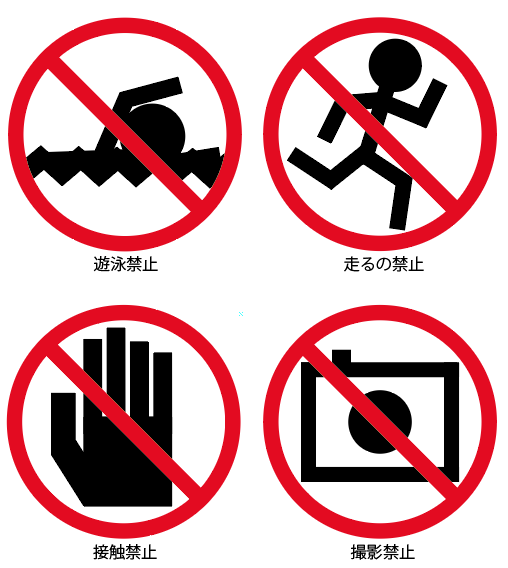
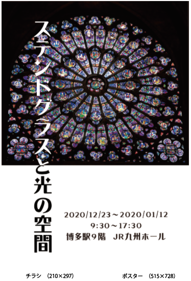
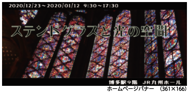
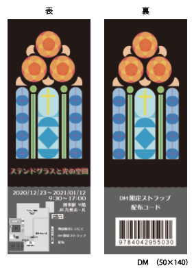

No.1 禁止事項のピクトグラム
禁止事項のピクトグラムです。
No.2 企画展の広告デザイン（グループ制作）
  
ステンドグラスの魅力を伝えるという企画展イメージの広告デザインです。
私が主に担当したのは、DMです。
このDMは、ステンドグラスのところがカラーフィルムなどになっていてステンドグラス特有の光の効果を感じられるようになっています。
禁止事項のピクトグラムです。
ステンドグラスの魅力を伝えるという企画展イメージの広告デザインです。
私が主に担当したのは、DMです。
このDMは、ステンドグラスのところがカラーフィルムなどになっていてステンドグラス特有の光の効果を感じられるようになっています。